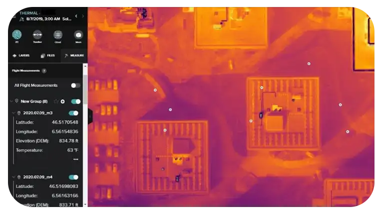
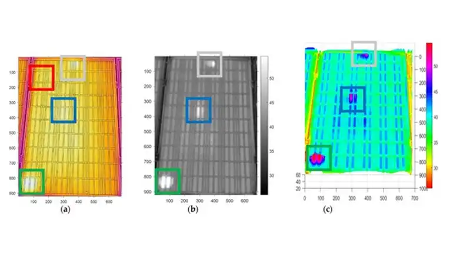
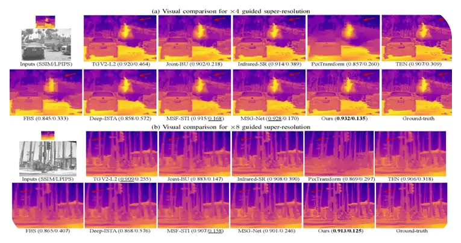
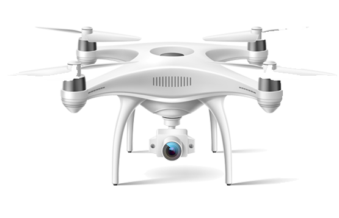

Solar plant drone thermography and inspection
In short: we carry out solar plant drone thermography and thermal surveys of substations and roofs with radiometric cameras. Solar plants are flown in steady sunlight with the plant running. The report classifies each hotspot, cell, diode or string fault and tags it to its place in the plant, so the O&M team can find and fix it (what the report should include). Our thermal team includes a thermographer certified to ISO 9712 Level 2, and our power-sector clients include NTPC and Adani.

We begin by adopting a collaborative approach, engaging closely with our clients to thoroughly understand their specific requirements and objectives for the thermal survey. This initial phase includes conducting detailed assessments of the site to identify crucial areas of interest, evaluate potential risks, and establish necessary safety protocols. Through this comprehensive site evaluation, we ensure that all pertinent factors are carefully considered.
After the site assessment we prepare a flight plan for the job, allowing for weather, the best flight height and the coverage needed.
At DATA PKT Infra & Geomatics, our commitment is centered on delivering precise and actionable insights utilizing advanced thermal imaging technology. We prioritize customization of our approach to align with the distinct requirements of each client, ensuring that our thermal surveys yield valuable information that supports informed decision-making and operational efficiency across diverse industries. By tailoring our services to meet specific client needs, we aim to provide comprehensive solutions that enhance productivity and facilitate strategic decision-making based on reliable thermal data.
Our drones carry thermal imaging cameras that record infrared emission from surfaces. Pilots fly the planned missions for full coverage at the required image resolution, capturing temperature variation across the site.
We process the imagery into high-resolution thermal maps that show temperature differences across the site, so decisions are based on measured data.
Through our specialized drone operations, we ensure thorough and reliable thermal surveys that support various applications across industries. By harnessing the capabilities of our advanced equipment and expertise, we aim to provide actionable insights that enhance operational efficiency and facilitate strategic planning for our clients.


After the flight, our team processes the raw thermal data into thermal maps and datasets and analyses them to find anomalies and hotspots, such as heat loss, equipment faults or structural defects.
Our thermal maps show temperature variation across the surveyed area clearly, for decisions on maintenance, efficiency and risk.
Each report is tailored to the asset and the decision it needs to support.
Each report lists every defect with its class and its position on the plant layout, with the thermal and visual images and the temperature difference to healthy modules, and a summary by block or inverter so repairs can be planned. See what a solar thermography report should include.

At DATA PKT, our dedication to customer satisfaction goes beyond the initial survey, as we provide continuous support and monitoring services to our clients. We offer regular thermal surveys to monitor changes over time, detect new challenges, and evaluate the impact of implemented solutions. Our team remains accessible to address any inquiries or issues our clients may have and collaborate on future initiatives to maximize the advantages of drone thermal imaging technology.
We are committed to ensuring ongoing customer satisfaction by delivering comprehensive support and monitoring services. This includes conducting regular thermal surveys to track temporal variations, identify emerging issues, and assess the effectiveness of remedies deployed. Our team is readily available to respond to client queries and collaborate on upcoming projects to harness the full potential of drone thermal imaging technology.
At DATA PKT, we are committed to exceeding customer expectations by providing continuous support and monitoring services. We conduct regular thermal surveys to monitor changes over time, identify emerging issues, and evaluate the effectiveness of implemented solutions.

Thermal survey used for
We use radiometric thermal sensors that capture thermal images and video with relative and actual temperature values over large areas, with centimetre-level detail. We tailor the survey to infrastructure, environmental or industrial needs and support you through interpretation of the results.
We provide following services:
With radiometric thermal imaging, a drone survey finds faults at cell level within a panel, panel level within a sub-array and array level within a block, faster and more safely than manual inspection. See our guide to solar thermography reports.
The ability to detect and diagnose issues with such precision enables maintenance teams to promptly enhance energy output and prevent further damage. By swiftly identifying performance faults, teams can take proactive measures to mitigate potential losses and ensure optimal operational efficiency of solar installations.
To facilitate the identification of performing panels or sub-arrays, we offer raw thermal radiometric imagery for processing. Alternatively, our expert team can handle the thermal data analysis, producing detailed hotspot reports integrated with GPS data. This comprehensive approach ensures that our clients receive actionable insights tailored to their specific needs, supporting informed decision-making and proactive maintenance strategies.

How we inspect a solar plant
We fly to the conditions and requirements of IEC TS 62446-3, the technical specification for outdoor infrared thermography of PV modules and plants. A thermal image taken outside these conditions can hide faults or show faults that are not there.
- Plant running, conditions stable. The plant is in normal operation and the flight is made in clear, steady sunlight, because a fault only shows as heat when the modules are producing power.
- Irradiance of at least 600 W/m². Irradiance in the plane of the modules is checked before and during the flight. If it drops below the minimum, flying stops until it recovers.
- Wind and cloud within limits. Cloud cover of no more than 2 okta (2/8 of the sky) and wind of no more than 4 Beaufort (about 28 km/h), so that passing shadows and wind cooling do not mask or mimic faults.
- Resolution of about 3 cm per pixel. The flight height is set so that each thermal pixel covers about 3 cm of the module, which puts roughly five pixels across each cell.
- Viewing angle above 30° to the module plane. At shallower angles the glass reflects the sky and the sun, and the temperature reading is no longer reliable.
- Radiometric camera. Every pixel carries a temperature value, so each anomaly can be measured against healthy modules and compared from one year to the next.
- Certified personnel. IEC TS 62446-3 expects the thermographer to hold a recognised certification. Our thermal team includes a thermographer certified to ISO 9712 Level 2.
Solar plant defects a thermal inspection finds
Each fault has its own thermal pattern. The table shows the common ones, what usually causes them and what is usually done about them.
| Defect | How it looks in the thermal image | Likely cause | Usual action | Priority |
|---|---|---|---|---|
| Single-cell hotspot | One cell clearly warmer than the cells around it | Cracked or damaged cell, local shading or dirt | Check the visual image; clean, or replace the module if the hotspot persists | Medium; high if very hot |
| Bypass diode (hot substring) | One third of the module evenly warmer than the rest | Bypass diode active or failed | Replace the diode or the module; check for a shorted diode | High |
| String off | A full string of modules warmer than the strings next to it | Blown fuse, open connector or other string fault | Check the fuse and connections at the combiner box | High |
| PID or patchwork heating | Several warm cells in an irregular, patchwork pattern | Cell degradation, potential-induced degradation (PID) | Group the affected modules by string and inverter; investigate PID | Medium |
| Soiling and shading | Irregular warm areas with soft edges | Dust, bird droppings, vegetation, nearby structures | Clean, trim, or plan around fixed shade | Low to medium |
| Junction box or connector | A small, very hot point at the junction box or cable | Loose, corroded or poorly crimped connection | Repair promptly; it can be a fire risk | High |
What thermal imaging does not show
Thermography finds faults that make heat. It does not reliably find cell cracks that have not yet cut a cell off; electroluminescence (EL) imaging shows those. It estimates, but does not measure, the power a string is losing; an IV-curve trace measures it. And it cannot see inside combiner boxes or inverters, or tell whether a connector is loose before it heats up; those need physical checks on the ground.
A good inspection plan uses the drone to find and map every fault, then sends the ground team only where the drone points. Read the full comparison in drone vs manual solar panel inspection.
Our Features

Fast Data Delivery
Our dedicated team of GIS experts works tirelessly to swiftly process and analyze drone survey data, ensuring prompt delivery, often ahead of schedule.
Survey-Grade Accuracy
Every survey is tied to DGPS ground control points, so measurements and volumes can be relied on.

Team of Experts
Our GIS engineers, drone pilots and software engineers work in shifts so survey data is processed without delay.
Advanced Equipment
We fly DJI drones and our own custom-built drones with high-resolution survey sensors.
Frequently asked questions
What is a drone thermal survey?
A drone thermal survey uses an infrared camera on a drone to measure surface temperature across a site. Faults that change temperature, such as failing solar cells, loose electrical joints or water ingress, become visible in the thermal image.
When should a solar thermal inspection be flown?
In clear, steady sunlight with the plant operating, usually around midday. The widely used standard for aerial thermography of PV plants, IEC TS 62446-3, sets a minimum irradiance of 600 W/m² on the modules.
What defects can thermal drones find in a solar plant?
Hot spots and cell cracks, bypass diode faults, open or disconnected strings, junction box overheating, potential induced degradation patterns, and soiling or shading.
What is the difference between radiometric and non-radiometric thermal cameras?
A radiometric camera records a temperature value for every pixel, so each defect can be measured and compared. A non-radiometric camera only shows relative hot and cold areas. Inspection reports need radiometric data.
What does a solar thermography report include?
Each defect with its class, its position on the plant layout, the thermal and visual images, and the temperature difference to healthy modules, with a summary by block or inverter so repairs can be planned.
Does the plant need to shut down for a drone thermal inspection?
No. The plant must be running, because a fault only shows as heat when the modules are producing power. The flight is made during normal operation, in steady sunlight, and is coordinated with the plant team so that no blocks are switched off or curtailed.
Is a drone thermal inspection compliant with IEC TS 62446-3?
Only if it meets the standard's conditions, resolution, personnel and reporting requirements; a drone does not make an inspection compliant by itself. The conditions include irradiance of at least 600 W/m² on the modules, cloud cover of no more than 2 okta, wind of no more than 4 Beaufort and a resolution of about 3 cm per pixel, and the thermographer should hold a recognised certification such as ISO 9712.
What can a drone thermal inspection not find?
Cell cracks that have not yet cut a cell off, which electroluminescence (EL) imaging shows; the exact power a string is losing, which an IV-curve trace measures; and faults inside combiner boxes and inverters, which need a physical check on the ground.